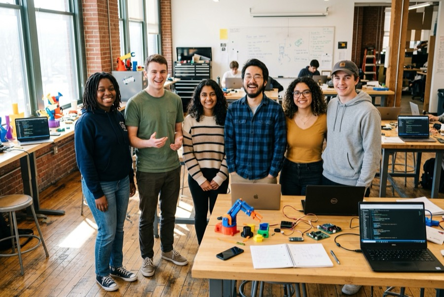
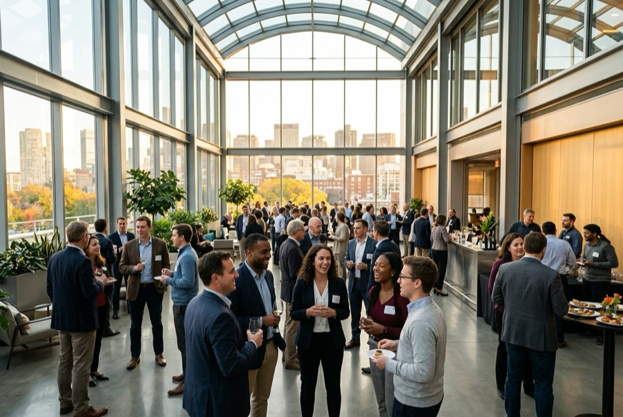
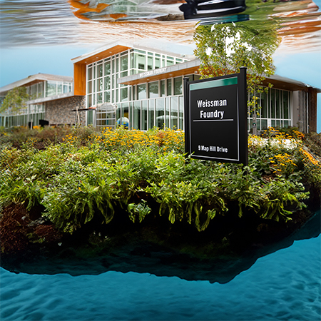

Community & Programs
Programs are ongoing. Events are what's on the calendar.

Standing Program · Students · Entrepreneurs Big Ideas — the Explorers Student co-leadership of The Generator The Generator is co-led by Babson's best and brightest students — visionaries, entrepreneurs, technologists, strategists, coders and prototypers. We call them Explorers. Standing Program · Students · Entrepreneurs AI Credits Free AI compute for entrepreneurial projects Two pathways to secure free credits for AI projects — real money for real builds.
Standing Program · Entrepreneurs · Business Owners B.R.A.I.N. The Babson Regional AI Network Unites industry and higher education to explore the entrepreneurial, social and ethical dimensions of AI. Periodic meetups throughout New England connect leaders, business owners, entrepreneurs, technologists, and AI researchers.
Standing Program · Business Owners · Entrepreneurs AI Innovators Bootcamp Training 1,000 small business owners in AI A 1-day deep dive into AI taught by Babson's award-winning faculty, delivered in partnership with Babson's top students. 93% of small business owners say they are not prepared for the AI-age; this program is the answer. Standing Program · Students Intern Opportunities Paid student roles inside the Specialty Labs Labs post research, design, and communications internships — from multilingual AI models to design futuring to Republic 2.0, the Ethics lab's city of the future. Standing Program · Faculty CollaboratorAI AI-assisted research-collaboration finder for faculty A tool that helps Babson faculty identify common research interests and explore collaboration opportunities using AI. It may not always be completely accurate or up-to-date — verify important information independently. Standing Program · Faculty · Students Leadership The faculty team behind The Generator The Generator is led by an interdisciplinary Babson faculty team which oversees its research, experimentation, programming, and partnerships — the same faculty who lead the eight Specialty Labs.